安装依赖
PostgreSQL
首先安装PostgreSQL，本测试系统为Ubuntu，请参考这里。
您可以通过psql像scott用户sudo一样运行单个命令来完成此操作，如下所示：
psql -h 127.0.0.1 -d postgres -U scott -p 5432
这会将你直接登录到Postgres中，而不需要中间的bashshell。
同样，您可以键入以下命令退出交互式Postgres会话：
\q
Ant的配置
首先通过通过Linux下的wget指令获取到最新的Ant包：
wget http://mirrors.cnnic.cn/apache//ant/binaries/apache-ant-1.10.5-bin.tar.gz
然后通过tar指令解压Ant包中的内容：
tar zxvf apache-ant-1.10.5-bin.tar.gz
最后根据解压后内容配置系统的环境变量 -->需要修改当前用户下的 .bash_profile文件中的配置：vim ~/.bash_profile
#set Java environment
export JAVA_HOME=/usr/local/jdk
export JRE_HOME={% math_inline %}{JAVA_HOME}/jre
export CLASSPATH=.:{% endmath_inline %}{JAVA_HOME}/lib:{% math_inline %}{JRE_HOME}/lib
export ANT_HOME=/usr/local/apache-ant
export PATH={% endmath_inline %}PATH:{% math_inline %}{ANT_HOME}/bin:{% endmath_inline %}{JAVA_HOME}/bin
然后执行ant：
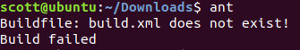
安装成功！
OLTPBenchmark编译
首先git到本地：
git clone https://github.com/oltpbenchmark/oltpbench
然后进入该目录，使用ant进行编译。
OLTPBenchmark
修改配置
编译好了，进入config：
cd config/
里面有很多样例，我们这里选择sample_pgtpcc_config.xml进行postgreSQL的性能测试：
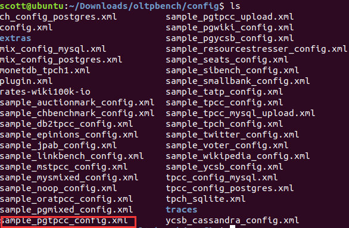
修改内容为（标准测试）：
<?xml version="1.0"?>
<parameters>
<!-- Connection details -->
<dbtype>postgres</dbtype>
<driver>org.postgresql.Driver</driver>
<DBUrl>jdbc:postgresql://localhost:5432/tpcc_test</DBUrl> #连接信息
<username>postgres</username> #用户名
<password>postgres</password> #密码
<isolation>TRANSACTION_READ_COMMITTED</isolation> #隔离级别
<scalefactor>1</scalefactor> #数据库的scale factor，在TPCC里面可以理解为warehouse的数量
<terminals>30</terminals> #
<works> #指定多个工作的任务，也可以包含两个工作任务（TP和AP的任务）
<work>
<time>30</time> #执行的时间
<rate>4000</rate> #峰值多少（考虑到对其他工作任务的影响）
<ratelimited bench=“tpcc”>true</ratelimited> #工作负载类型
<weights>44,44,4,4,4</weights> 负载分配
</work>
</works>
<!-- TPCC specific -->
<transactiontypes>
<transactiontype>
<name>NewOrder</name>
</transactiontype>
<transactiontype>
<name>Payment</name>
</transactiontype>
<transactiontype>
<name>OrderStatus</name>
</transactiontype>
<transactiontype>
<name>Delivery</name>
</transactiontype>
<transactiontype>
<name>StockLevel</name>
</transactiontype>
</transactiontypes>
</parameters>
然后首先根据这个配置文件新建表：
./oltpbenchmark -b tpcc -c config/sample_pgtpcc_config.xml --create=true --load=true
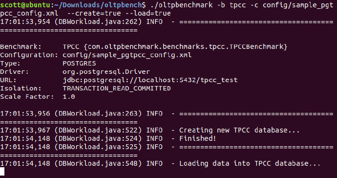
可以在pg中查看表：
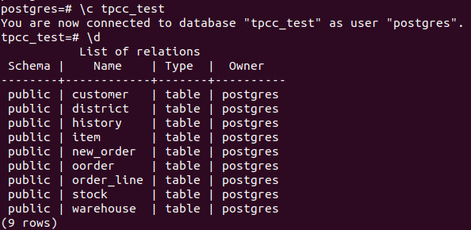
测试
./oltpbenchmark -b tpcc -c config/sample_pgtpcc_config.xml --execute=true -s 5 -o outputfile
这里-s表示每隔5s输出到-o中
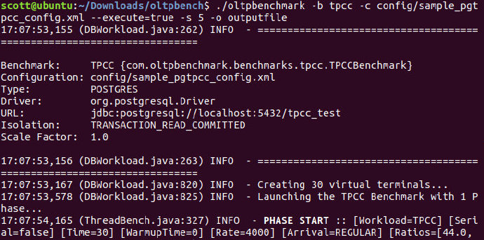
然后在results/outputfile.res中查看结果：
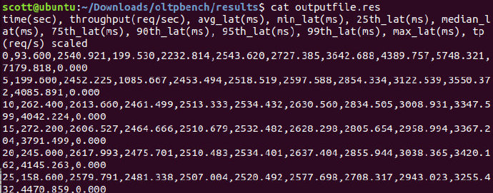
性能调优
修改配置
打开pg终端，输入SHOW config_file;查看config文件的位置：
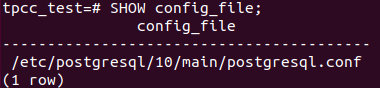
打开该文件，并对以下配置进行修改：
| Parameter | Meanings | Optimization Strategy |
|---|---|---|
| shared_buffers | 数据库服务器将使用的共享内存缓冲区大小，该缓冲区为所有连接共用。从磁盘读入的数据（主要包括表和索引）都缓存在这里。 | 提高该值可以减少数据库的磁盘IO。 |
| work_mem | 声明内部排序和哈希操作可使用的工作内存大小。该内存是在开始使用临时磁盘文件之前使用的内存数目。数值以kB为单位的，缺省是 1024 (1MB)。请注意对于复杂的查询，可能会同时并发运行好几个排序或者哈希操作，每个都会使用这个参数声明的这么多内存，然后才会开始求助于临时文件。同样，好几个正在运行的会话可能会同时进行排序操作。因此使用的总内存可能是 work_mem 的好几倍。ORDER BY, DISTINCT 和mergejoin都要用到排序操作，而哈希操作在哈希连接、哈希聚集和以哈希为基础的 IN 子查询处理中都会用到。该参数是会话级参数。 | 执行排序操作时，会根据work_mem的大小决定是否将一个大的结果集拆分为几个小的和 work_mem差不多大小的临时文件写入外存。显然拆分的结果是导致了IO，降低了排序的速度。因此增加work_mem有助于提高排序的速度。通常设置时可以逐渐调大，知道数据库在排序的操作时不会有大量的写文件操作即可。该内存每个连接一份，当并发连接较多时候，该值不宜过大。 |
| effective_cache_size | 优化器假设一个查询可以使用的最大内存（包括pg使用的和操作系统缓存），和shared_buffer等内存无关，只是给优化器生成计划使用的一个假设值。 | 设置稍大，优化器更倾向使用索引扫描而不是顺序扫描，建议的设置为可用空闲内存的25%，这里的可用空闲内存指的是主机物理内存在运行pg时得空闲值。 |
| maintenance_work_mem | 这里定义的内存只是在CREATE INDEX, VACUUM等时用到，因此用到的频率不高，但是往往这些指令消耗比较多的资源，因此应该尽快让这些指令快速执行完毕。 | 在数据库导入数据后，执行建索引等操作时，可以调大，比如512M。 |
| wal_buffers | 日志缓冲区，日志缓冲区的大小。 | 两种情况下要酌情调大：1.单事务的数据修改量很大，产生的日志大于wal_buffers，为了避免多次IO，调大该值。 2.系统中并发小数据量修改的短事务较多，并且设置了commit_delay，此时wal_buffers需要容纳多个事务（commit_siblings个）的日志，调大该值避免多次IO。 |
| commit_delay | 事务提交后，日志写到wal_buffer上到wal_buffer写到磁盘的时间间隔。 | 如果并发的非只读事务数目较多，可以适当增加该值，使日志缓冲区一次刷盘可以刷出较多的事务，减少IO次数，提高性能。需要和commit_sibling配合使用。 |
| commit_siblings | 触发commit_delay等待的并发事务数，也就是系统的并发活跃事务数达到了该值事务才会等待commit_delay的时间才将日志刷盘，如果系统中并发活跃事务达不到该值，commit_delay将不起作用，防止在系统并发压力较小的情况下事务提交后空等其他事务。 | 应根据系统并发写的负载配置。例如统计出系统并发执行增删改操作的平均连接数，设置该值为该平均连接数。 |
| fsync | 设置为on时，日志缓冲区刷盘时，需要确认已经将其写入了磁盘，设置为off时，由操作系统调度磁盘写的操作，能更好利用缓存机制，提高IO性能。 | 该性能的提高是伴随了数据丢失的风险，当操作系统或主机崩溃时，不保证刷出的日志是否真正写入了磁盘。应依据操作系统和主机的稳定性来配置。 |
| autovacuum | 事务提交后，日志写到wal_buffer上到wal_buffer写到磁盘的时间间隔。 | 如果并发的非只读事务数目较多，可以适当增加该值，使日志缓冲区一次刷盘可以刷出较多的事务，减少IO次数，提高性能。需要和commit_sibling配合使用。 |
| bgwriter_delay | 后台写进程的自动执行时间 | 后台写进程的作用是将shared_buffer里的脏页面写回到磁盘，减少checkpoint的压力，如果系统数据修改的压力一直很大，建议将该时间间隔设置小一些，以免积累的大量的脏页面到checkpoint，使checkpoint时间过长（checkpoint期间系统响应速度较慢）。 |
当然，缓冲区和内存越大越好，但要考虑到机器的性能，因此是一个tradeoff。
重新测试
需要重启postgresql，执行pg_ctl reload
在Windows下进行性能测试
修改配置
首先修改run下面postgres.properties的配置文件，将数据库和用户名密码指定为本地。
新增表
在当前目录中输入（在Windows中需要使用.bat文件，Linux中需要.sh文件）：
.\runSQL.bat postgres.properties sqlTableCreates
自动创建用于测试的九张表
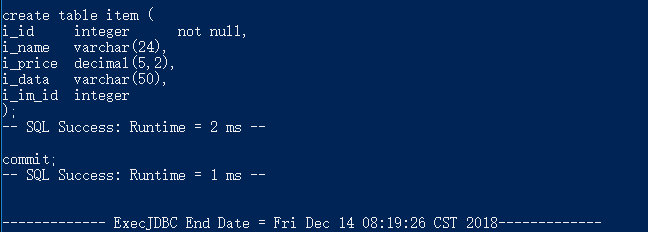
查看数据库中是否新建：
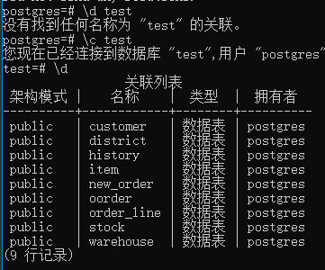
新增数据
.\loadData.bat postgres.properties numWarehouses 10
numWarehouse指的是仓库数（具体含义见上篇博文），默认为1，导入9张表的数据大小大概70多M，当 numWarehouse为10时，数据大小可以近似当作1GB数据。
创建成功：
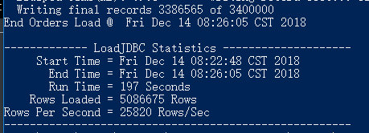
为基础表创建必要的索引:
.\runSQL.bat postgres.properties sqlIndexCreates
测试
运行runBenchmark.bat借助GUI程序测试数据库
.\runBenchmark.bat postgres.properties
不要忘记设置图形界面的仓库数时要与第4步中设置的数量相符；此外，测试的结果报告除了显示在图形界面有显示以外，还在run/reports目录下有备份，随时可以查阅
- Control-Database:配置所要链接的数据库，默认会读取之前我们修改的配置文件，故此处不用动
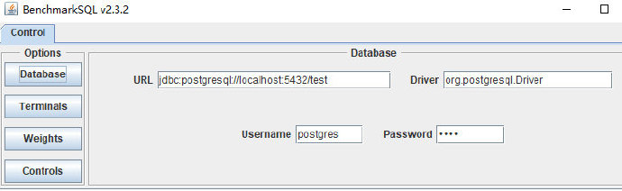
Control-Terminals:配置终端数，仓库数，是否显示Debug信息，指定测试时间以及每终端事务等，需要将仓库数设置为10
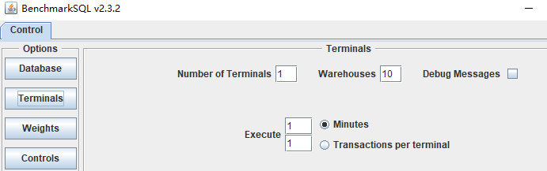
Control-Weights:配置TPC-C测试中五中事务的比重（界面中只要配置4种），一般按默认比例测试即可
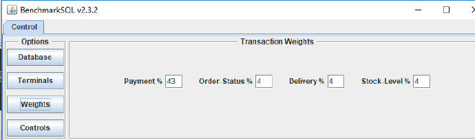
Control-Controls:控制器设置，点击Create Terminals创建一个终端；点击Start Transaction开始基准测试，点击Stop Transaction停止基准测试
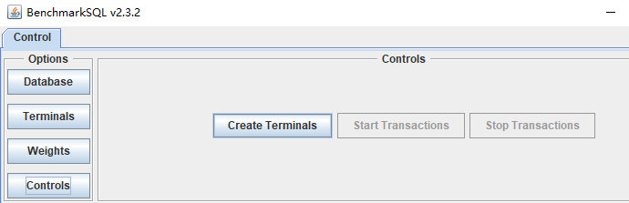
在测试中若出现错误，则应该是线程冲突，一般不用理会
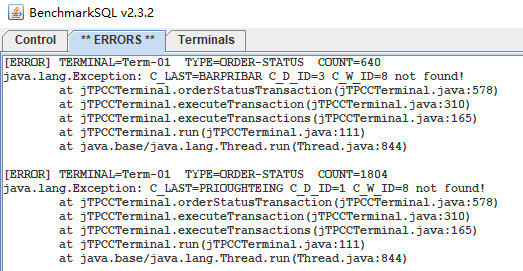
注意
- 测试完后在界面下方会显示简要的测试结果，包括平均tpmC值（每分钟执行的事务数），当前tpmC值，内存使用情况等等；出结果以后尽量记录下来，以为之后如果乱点界面按钮的话，测试结果将会被重写（感觉是一个bug）；
- 运行过程中如果想要修改终端数等参数，最好关闭GUI界面，重新运行runBenchmark.bat
测试结果
优化
修改postgresql.conf配置信息，在windows上找该配置文件。
需要将所有的测试数据删除，并重启pg。
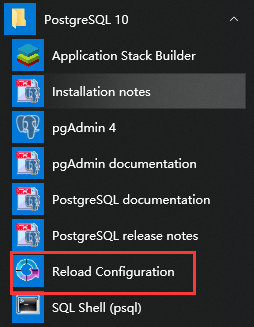
重复之前的操作，需要重新load数据，创建索引，并测试，得到结果为：